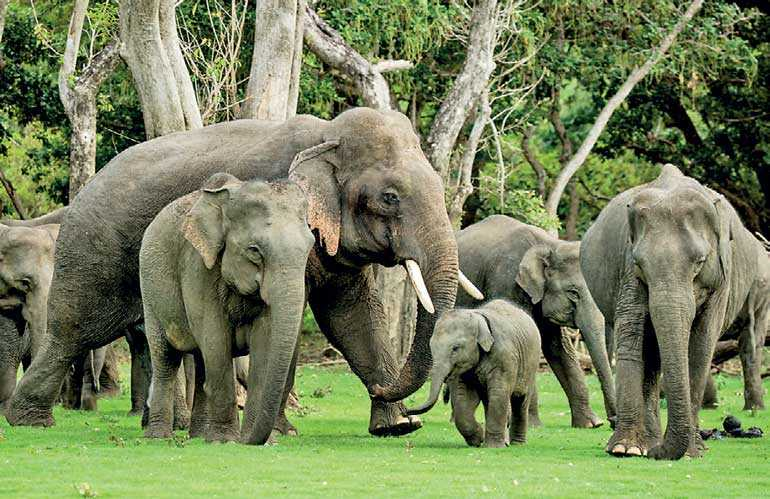
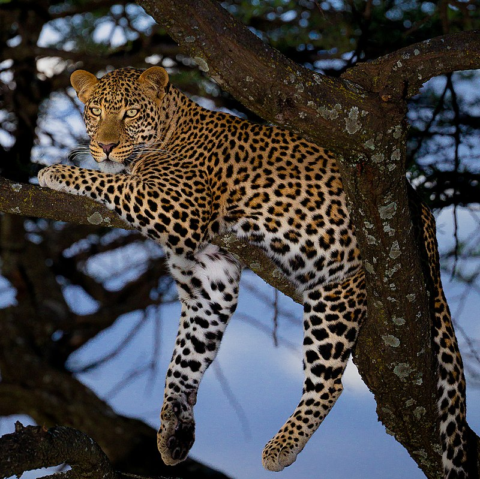
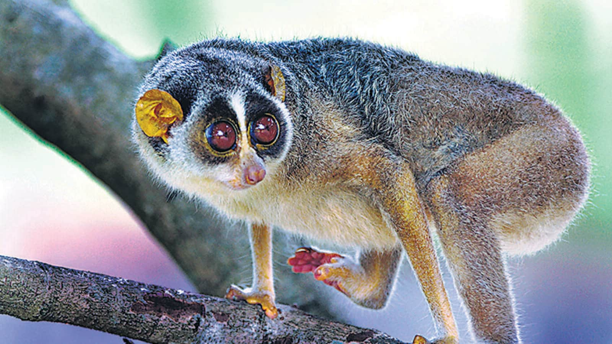
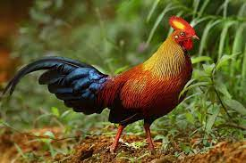

Introduction
Sri Lanka is a bio-diversity hotspot, home to a variety of wildlife that can be found in its national parks, forests, and coastal areas. Here are some of the best places to see wildlife in Sri Lanka,
Sinharaja Forest Reserve
Sri Lanka's Sinharaja Forest Reserve, a UNESCO haven and biodiversity hotspot, shelters over 60% endemic trees, 50% endemic species like the Purple-faced Langur, and shy wonders like the Sri Lankan Leopard, all amidst waterfalls, vibrant calls of the Spurfowl, and dappled sunlight on the rainforest floor. This emerald paradise awaits exploration, with hikes, wildlife watching, and the magic of nature's wonders.
Minneriya National Park
Minneriya National Park, an emerald necklace around Sri Lanka's Minneriya reservoir, pulsates with the rhythm of the wild. Picture this: a savanna dotted with trees, where herds of wild elephants numbering over 300 gather during the dry season, transforming the landscape into a breathtaking sea of grey giants. Their trumpeting calls mingle with the cries of peacocks and the chatter of monkeys, creating a symphony of nature's orchestra. So come, lose yourself in its emerald embrace.
Udawalawe National Park
Udawalawe National Park, an Eden carved from Sri Lanka's dry plains, is a haven for majestic elephants. Picture hundreds of these giants grazing the grasslands, trumpeting calls echoing across the landscape. Beyond elephants, spotted deer, crocodiles, and over 200 bird species thrive in this 308-square-kilometer expanse. Jeep safaris wind through the park, offering glimpses of wildlife amidst the backdrop of the Udawalawe Reservoir, a shimmering emerald jewel reflecting the golden sunsets. visit the majestic udawalawe.
More about Animals
| Animal species | Animal picture | Fun facts | Prominent places to spot |
|---|---|---|---|
| Asian Elephant (Elephas maximus) |  | Asian elephants are highly social creatures, living in close-knit herds led by experienced matriarchs (wise old females). These herds typically consist of related females and their young, with males venturing out on their own once they reach maturity. Their foraging habits create clearings for new vegetation to grow, and their dung disperses seeds, promoting plant diversity. They're basically gardeners with trunks! |
|
| Sri Lankan Leopard (Panthera Pardus Kotiya) |  | Those beautiful markings aren't just circles – they're called rosettes and resemble open roses with a central spot surrounded by rings. No two leopards have identical rosettes, making them like furry fingerprints! most leopards have tawny fur with dark rosettes, a rare mutation called melanism produces melanistic leopards, also known as black panthers. Their spots are still there, but hidden within the dark fur |
|
| Golden palm civet(Paradoxurus Zeylonensis) |  |
They're arboreal acrobats, spending most of their lives in the leafy canopy of Sri Lankan rainforests. Their sharp claws and long tails make them expert climbers, navigating branches with impressive agility.Their large eyes and excellent vision help them navigate the shadows with ease. |
|
| Sloth bear (Melursus ursinus) |  |
Sloth bears are nature's vacuum cleaners, specializing in slurping up termites and ants. Their long, curved claws are perfect for ripping open termite mounds, and their powerful snouts can suck up insects like nobody's business. They even have specially adapted nostrils that close shut to keep dust and bugs out! |
|
| Slender Loris (Loris lydekkerianus) |  | With their soft, furry bodies and cryptic coloration, slender lorises blend seamlessly into the foliage. Their fur can be gray, reddish-brown, or even silvery-gray, depending on the species. This excellent camouflage helps them avoid predators and sneak up on unsuspecting prey. |
|
| Jungle Fowl (Gallus lafayetti) |  | Unlike their domesticated descendants, jungle fowl are fiercely independent birds, living in small flocks led by a dominant male. They spend their days foraging for seeds, fruits, and insects in the dense undergrowth of tropical forests, scratching the ground with their powerful feet. |
|
|
|
|||